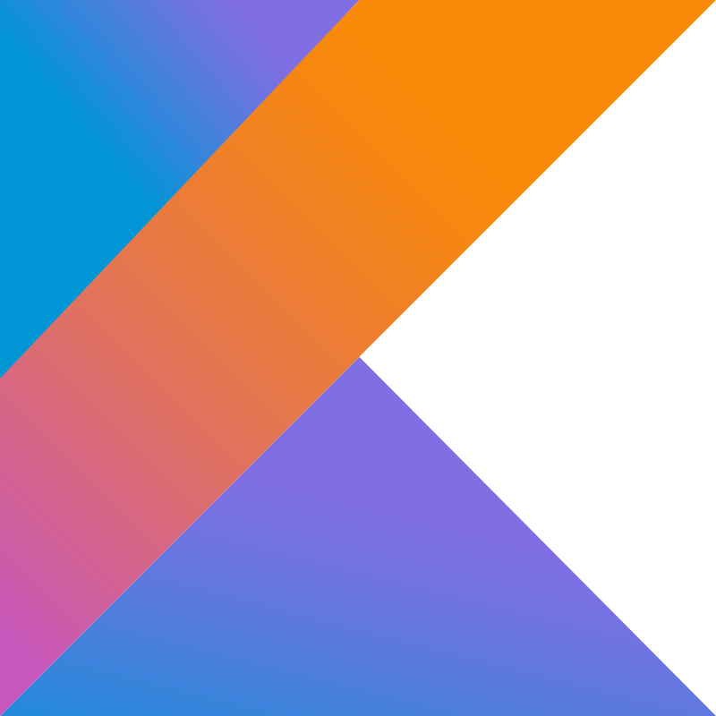
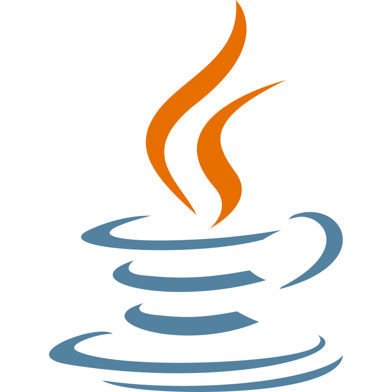
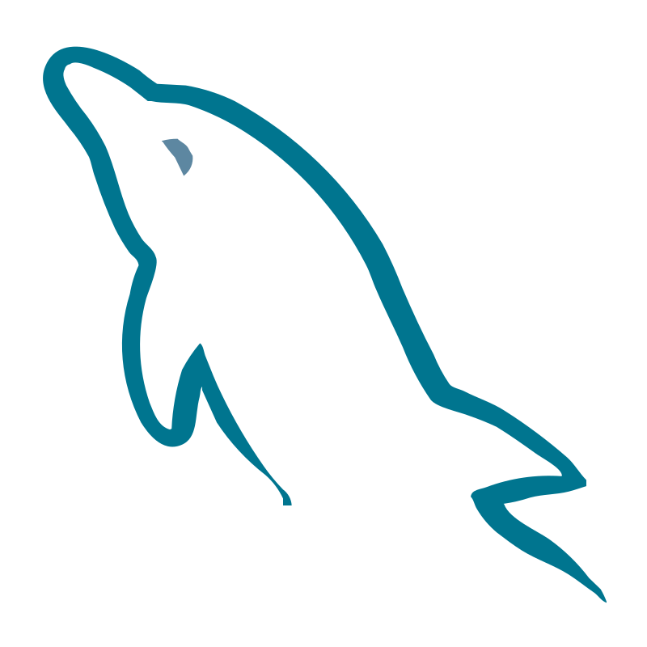
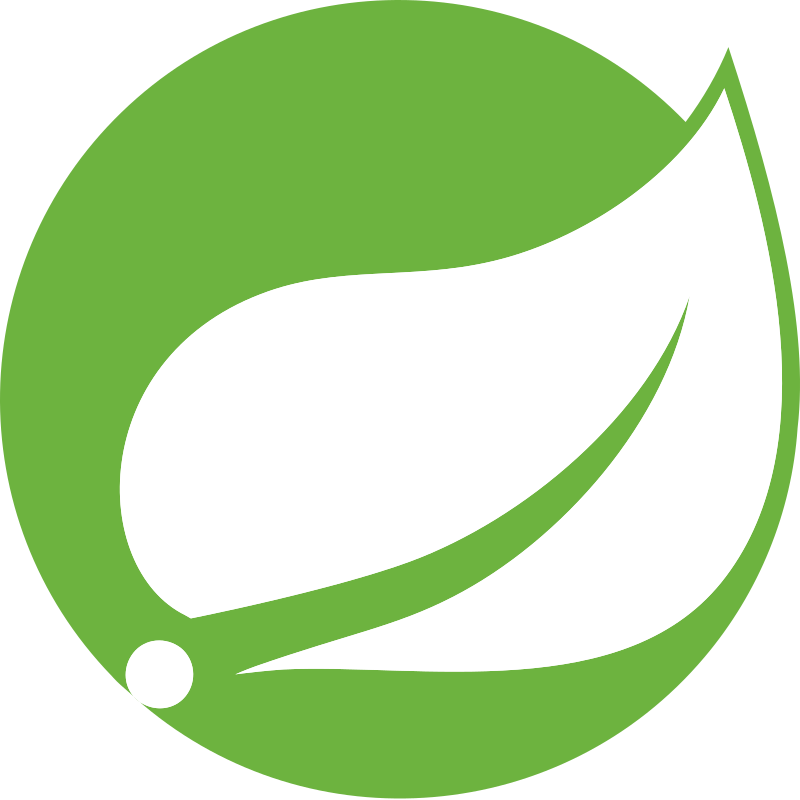
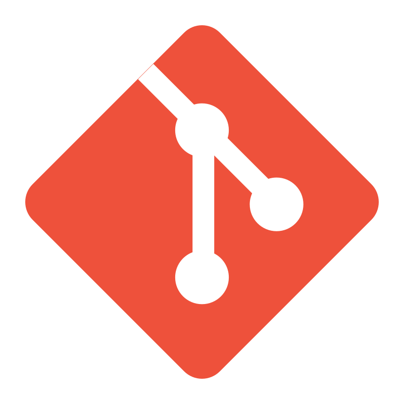
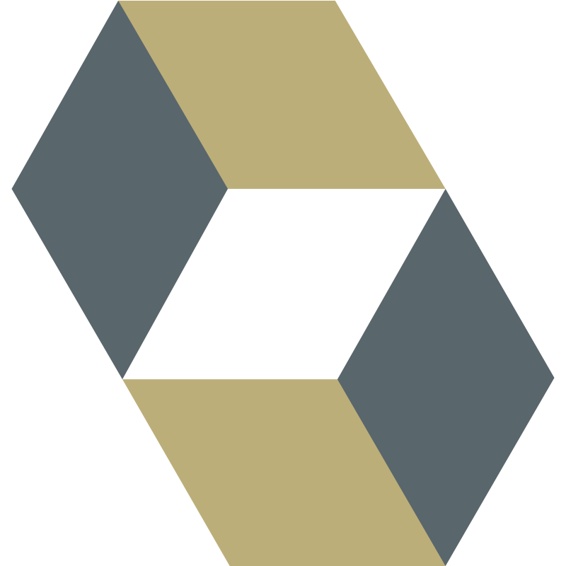
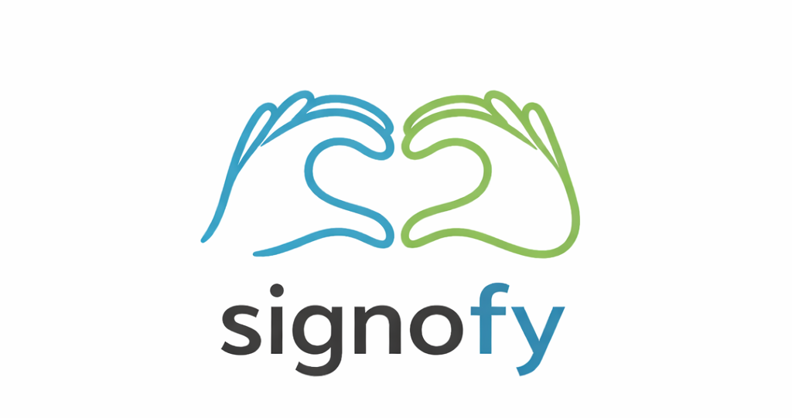
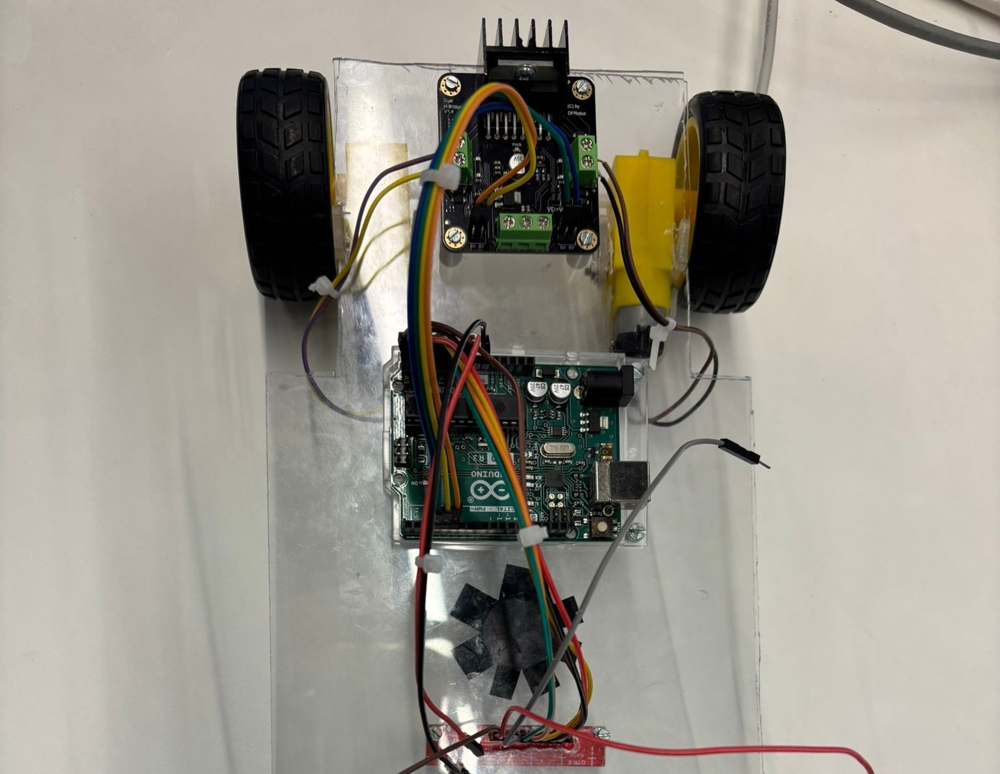
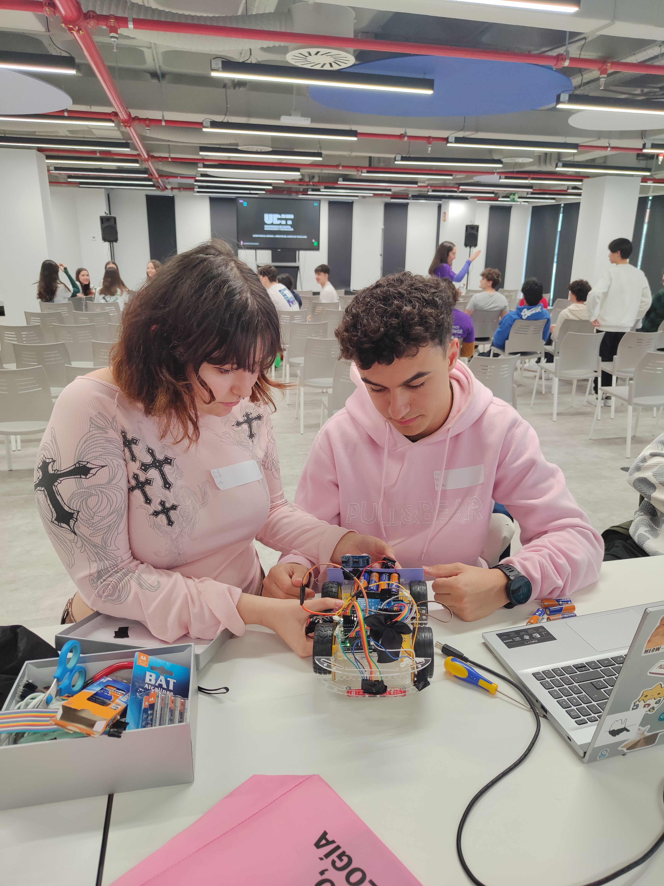

Ingeniería Multimedia · Universitat de València
Un siguiente paso para seguir mezclando tecnología, creatividad y producto digital.
PORTFOLIO 2026 ✦
Desarrollo software y diseño experiencias digitales, combinando código, producto y creatividad para construir soluciones que funcionan de verdad.

No me limito a escribir código.
Diseño y construyo productos
con un propósito claro.
Estudiante de Ingeniería Multimedia y Técnica Superior en Desarrollo de Aplicaciones Multiplataforma, con formación en programación, diseño de producto y experiencia de usuario.
Además del desarrollo, colaboro como monitora voluntaria y participo en iniciativas STEM, donde el trabajo en equipo es tan importante como la tecnología.

Kotlin
Java UI / UX
MySQL Accesibilidad Node.js
Spring Boot
Git Docker
HibernateSelección de proyectos académicos y personales en los que he trabajado desarrollo, producto, accesibilidad, robótica y diseño de interfaz.

Aprender LSE de forma accesible, visual y gamificada.
Ver proyecto ↗
Un siguelíneas construido para competir y aprender.
Leer historia ↗Gestión digital de talleres mecánicos · API REST · Spring Boot · Electron.
↗Un siguiente paso para seguir mezclando tecnología, creatividad y producto digital.
Desarrollo y programación de aplicaciones en entornos profesionales.
Diseño, programación y puesta a punto de un robot siguelíneas con Arduino y C++.
Aplicaciones multiplataforma, bases de datos, APIs, arquitectura y desarrollo web.
El punto de partida: sistemas, redes y la curiosidad que acabaría llevándome al desarrollo.
Colaboro como monitora voluntaria y participo en iniciativas de educación no formal como STEM Girls: experiencias que me recuerdan que la tecnología, al final, siempre trata de personas.

El planteamiento del reto, la arquitectura de sensores, el algoritmo de control y las lecciones aprendidas durante la competición.
Leer historia completa ↗Estoy abierta a nuevas oportunidades, colaboraciones y proyectos donde pueda aportar valor y seguir creciendo profesionalmente.
carlafdezdh@gmail.com ↗